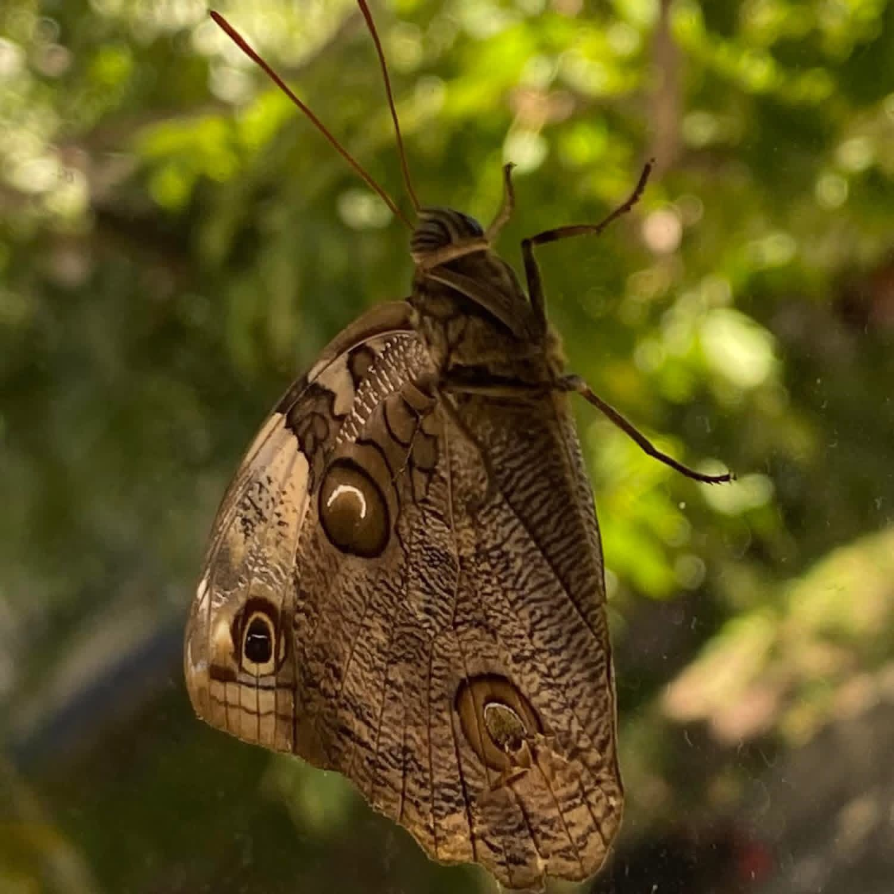
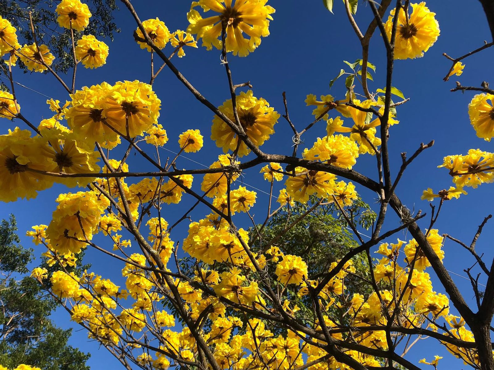

Click para info ↺
Mariposa "Búho"
Presenta grandes manchas oculares en sus alas que asemejan los ojos de un búho para ahuyentar depredadores.
Toca para volver
Insectos
Mariposa Búho
Coleccionando momentos.

Click para info ↺
Liquidámbar
Árbol caducifolio famoso por sus hojas que cambian a rojos intensos. Tiene propiedades medicinales.
Toca para volver
Árboles
Liquidámbar
Resistencia natural.

Click para info ↺
Árbol de Cortés
El árbol de Cortés y su peculiar y llamativa flor amarilla lo caracteriza en epoca de verano.
Toca para volver
Flora
Cortés/h3>
Árbol caducifolio.